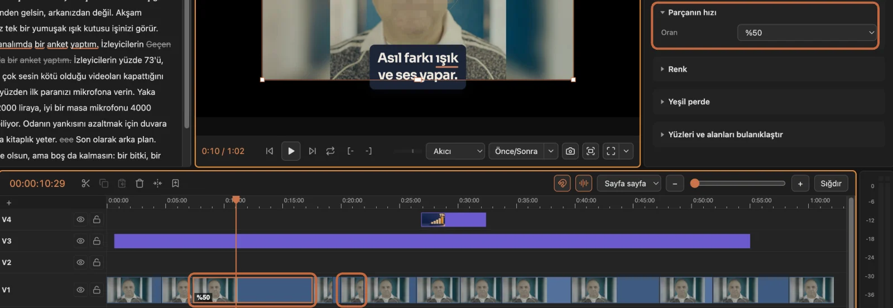

Hız, ağır çekim, donmuş kare ve ters
Bir klibi hızlandır, yavaşlat, bir kareyi dondur ya da tersine oynat. Sesin tonu değişmez.

Hızı değiştir
- Bir klibe ya da parçaya sağ tıkla, Hız…; ya da Klip › Hız'da ayarla (kaydın bir parçası için Parçanın hızı). Klip, Timeline'da %50 gibi hızını gösterir.
- Hız aracıyla (R) bir kenarı sürükle: uzarsa yavaşlar, kısalırsa hızlanır.
Ağır çekim
Bir video yavaşlatıldığı yerde kareleri doldurulmalı. Bir çekim için nasıl olacağını Klip sekmesindeki Ağır çekim'de, kayıt için Görüntü › Varsayılan ağır çekim'de seç:
- Kareleri tekrarla;
- Kareleri harmanla;
- Yeni kareler üret (dışa aktarma yavaşlar): en akıcısı. İzleyici harmanlar; yeni kareleri dışa aktarma üretir.
Dondur ve ters çevir
- Kareyi Dondur (⇧ F), oynatma kafasındaki kareyi iki saniye tutar; Timeline'da Donmuş kare olarak görünür.
- Tersine Çevir klibi geriye oynatır; Yeniden İleri Oynat geri alır.
Müziği sona kadar uzat
Bir müzik klibi için Klip sekmesinde Videonun Sonuna Kadar Uzat: müzik kısaysa yumuşak birleşimlerle tekrarlanır, uzunsa kesilir; her iki durumda sonda yavaşça kısılır.